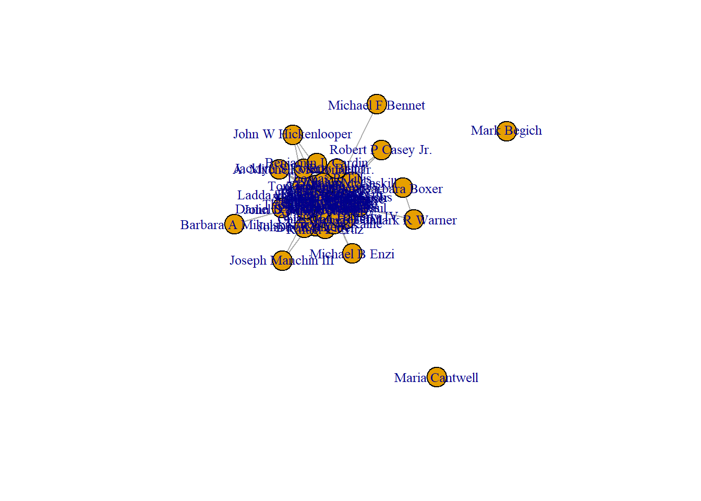

library(tidyverse)
library(igraph)STOCKS Act
final_project_697
What stocks do our senators have in common?
Introduction
Since 2012, the STOCK Act (Stop Trading on Congressional Knowledge) has given insight into the ethically dubious of congressional insider trading. Since congresspeople sit on many committees where they might gain inside information, it’s widely acknowledged that they have an unfair advantage over others in the stock market. Instead of making trades outright illegal for congresspeople, the STOCK Act (among many other things) requires them to disclose purchase and sales of stocks, bonds, and securities to the public.
It’s not as if insider trading has stopped. An industry has naturally sprung up around the data provided by the STOCK Act, operating on the principle that if the stock is good enough for a member of congress, it should be good enough for you, too.
A 2022 New York Times investigation found that more than half of congress members sat on committees that gave them unique insight into the industries they were investing in.
Network Analysis
I propose a network where congresspeople are nodes and whether they have a stock in common are edges. This could be adjusted to whether they have at least 3 or 5 stocks in common depending on the density of the network.
The nodes will be modified to include partisan affiliation, committee assignment, and other factors as nodeattributes.
Among my research questions are:
Who is the most connected? Are there any prominent clusters of senators based on their investment patterns?
Are there any senators who bridge networks, e.g. by holding different kinds of stocks?
What effect does political affiliation have on position in the network? Are Republicans and Democrats more alike than one would think in terms of investment strategies?
How do investment ties relate to committee assignments?
senators_data <- read_csv("SenatorCleaned.csv")To achieve this, I’ve been using this Kaggle dataset that, while not intended for social network analysis, will suit my purpose (it’s just senators for now):
https://www.kaggle.com/datasets/heresjohnnyv/congress-investments
Here, my code finds the Ticker values (e.g., AAPL) for each senator’s investment, then creates an edgelist between them and another senator as long as they both are invested in the same Ticker.
# Filter data for valid Ticker values
filtered_data <- senators_data %>%
filter(!is.na(Ticker) & Ticker != "" & Ticker !="--")
# Find senators who share the same Ticker
shared_ticker <- filtered_data %>%
group_by(Ticker) %>%
summarize(senators = list(Name)) %>%
filter(length(senators) >= 2)
# Create combinations of senators within each shared Ticker group
edge_list <- shared_ticker %>%
mutate(senator_combinations = map(senators, ~ {
if (length(.x) >= 2) t(combn(.x, 2)) else NULL
})) %>%
unnest(senator_combinations) %>%
select(-senators) %>%
distinct()
#Correct the character matrix issue that resulted from unnest()
edge_list <- edge_list %>%
mutate(from = edge_list$senator_combinations[,1], to = edge_list$senator_combinations[,2]) %>%
select(-senator_combinations) %>%
filter('from' != 'to') %>%
select('from', 'to')
# Create network graph
network_graph <- graph_from_data_frame(edge_list, directed = FALSE)
network_graphIGRAPH b73eb2a UN-- 56 6781 --
+ attr: name (v/c)
+ edges from b73eb2a (vertex names):
[1] Sheldon Whitehouse --Sheldon Whitehouse
[2] Sheldon Whitehouse --James M Inhofe
[3] Sheldon Whitehouse --Robert P Corker Jr.
[4] Sheldon Whitehouse --Thomas R Carper
[5] James M Inhofe --James M Inhofe
[6] Sheldon Whitehouse --James M Inhofe
[7] James M Inhofe --Robert P Corker Jr.
[8] James M Inhofe --Thomas R Carper
+ ... omitted several edges# Plot the network graph
plot(network_graph, edge.arrow.size = 0.5, vertex.label.cex = 0.8)
Please ignore the self-loops for now!
Let’s have a closer look:
# Define the desired x-axis and y-axis range
x_min <- -.25
x_max <- .25
y_min <- -.25
y_max <- .25
# Plot the network graph with the specified zoom level
plot(network_graph,
edge.arrow.size = 0.5,
vertex.label.cex = 0.7,
xlim = c(x_min, x_max),
ylim = c(y_min, y_max))Description of the network
is_bipartite(network_graph)[1] FALSEis_directed(network_graph)[1] FALSEis_weighted(network_graph)[1] FALSEDyad Census
It’s fully expected that there are no asymmetric dyads, as this is currently a binary graph:
igraph::dyad.census(network_graph)$mut
[1] 567
$asym
[1] 0
$null
[1] 973Triad Census
I can use my trusty function:
triad_chart_func <- function(data) {
triad_data <- igraph::triad_census(data)
triad_types <- c(
'003' = 'A,B,C, empty triad.',
'012' = 'A->B, C, triad with a single directed edge.',
'102' = 'A<->B, C, triad with a reciprocated connection between two vertices.',
'021D' = 'A<-B->C, triadic out-star.',
'021U' = 'A->B<-C triadic in-star.',
'021C' = 'A->B->C, directed line.',
'111D' = 'A<->B<-C.',
'111U' = 'A<->B->C.',
'030T' = 'A->B<-C, A->C.',
'030C' = 'A<-B<-C, A->C.',
'201' = 'A<->B<->C.',
'120D' = 'A<-B->C, A<->C.',
'120U' = 'A->B<-C, A<->C.',
'120C' = 'A->B->C, A<->C.',
'210' = 'A->B<->C, A<->C.',
'300' = 'A<->B<->C, A<->C, complete triad.'
)
names(triad_data) <- triad_types
triad_data <- data.frame(triad_data)
triad_data$triad_type <- row.names(triad_data)
ggplot(triad_data, aes(x = triad_type, y = triad_data)) +
geom_bar(stat = "identity", fill = "steelblue") +
coord_flip() +
labs(x = "", y = "Frequency",
title = "Frequency of Triad Types") +
theme_classic()
}And plot the result:
triad_chart_func(network_graph)Warning in igraph::triad_census(data): At core/misc/motifs.c:1165 : Triad
census called on an undirected graph.
Transitivity
transitivity(network_graph)[1] 0.7213385senators_of_interest <- V(network_graph)[c("Barbara Boxer","Claire McCaskill", "Tom Coburn")]
transitivity(network_graph, type="local", vids=senators_of_interest)[1] 0.0000000 1.0000000 0.7684729Distances (path lengths)
distances(network_graph,"James M Inhofe","Barbara Boxer") Barbara Boxer
James M Inhofe 2Components, Size
This indicates there are a few senators that have no stocks in common with others:
igraph::components(network_graph)$no #Number of components[1] 3igraph::components(network_graph)$csize #Size of each component[1] 54 1 1Degrees
This shows the most ‘connected’ stock traders. Naturally, for now while I have a binary network, in_degree will be the same as out_degree:
in_degrees <- degree(network_graph, mode = "in")
out_degrees <- degree(network_graph, mode = "out")
total_degrees <- degree(network_graph, mode = "total")
degree(network_graph, mode = "in") Sheldon Whitehouse James M Inhofe Robert P Corker Jr.
1167 522 1275
Thomas R Carper Thomas H Tuberville Kelly Loeffler
820 299 693
Shelley M Capito Pat Roberts David A Perdue Jr
910 433 1126
Christopher A Coons John F Reed Dean Heller
32 338 339
Jeffry L Flake Jerry Moran John Cornyn
83 380 27
John Hoeven Patrick J Toomey Patty Murray
648 272 645
Susan M Collins Saxby Chambliss William Cassidy
829 23 466
Daniel R Coats Gary C Peters Thad Cochran
82 193 910
Ladda Tammy Duckworth Tina Smith Angus S King Jr.
132 20 185
Tom Coburn David B Vitter Cory A Booker
243 20 82
Jacklyn S Rosen Thomas R Tillis Jon Kyl
4 30 26
Claire McCaskill Barbara Boxer John W Hickenlooper
6 2 3
Roy Blunt Rafael E Cruz Mark Begich
36 36 4
Robert P Casey Jr. Chris Van Hollen Thomas Udall
2 73 20
Rand Paul Joseph Manchin III A. Mitchell McConnell Jr.
10 2 17
Daniel S Sullivan Michael B Enzi Timothy M Kaine
20 2 25
Benjamin L Cardin John N Kennedy John D Rockefeller IV
10 4 15
Barbara A Mikulski Michael F Bennet Maria Cantwell
3 3 2
Mark R Warner William F Hagerty IV
4 9 node_degrees <- data.frame(node = V(network_graph)$name, in_degree = in_degrees, out_degree = out_degrees, total_degree = total_degrees)
sorted_nodes <- node_degrees[order(-node_degrees$total_degree), ]
sorted_nodesCloseness Centrality
head(igraph::closeness(network_graph)) Sheldon Whitehouse James M Inhofe Robert P Corker Jr. Thomas R Carper
0.01562500 0.01428571 0.01612903 0.01492537
Thomas H Tuberville Kelly Loeffler
0.01351351 0.01449275 Thoughts
- Investing in stocks, especially blue-chip stocks or index funds, may not always be especially intentional. Very few people - and I would guess, even fewer Congresspeople - are actually picking their stocks and day trading - though some are, and this data reflects that!
- As mentioned, I can vary the existence of the edge by setting the threshold to 3 or 5 stocks in common, instead of one.
- I intend to find data from the House of Representatives as well. The scraping tools for this data are open source.